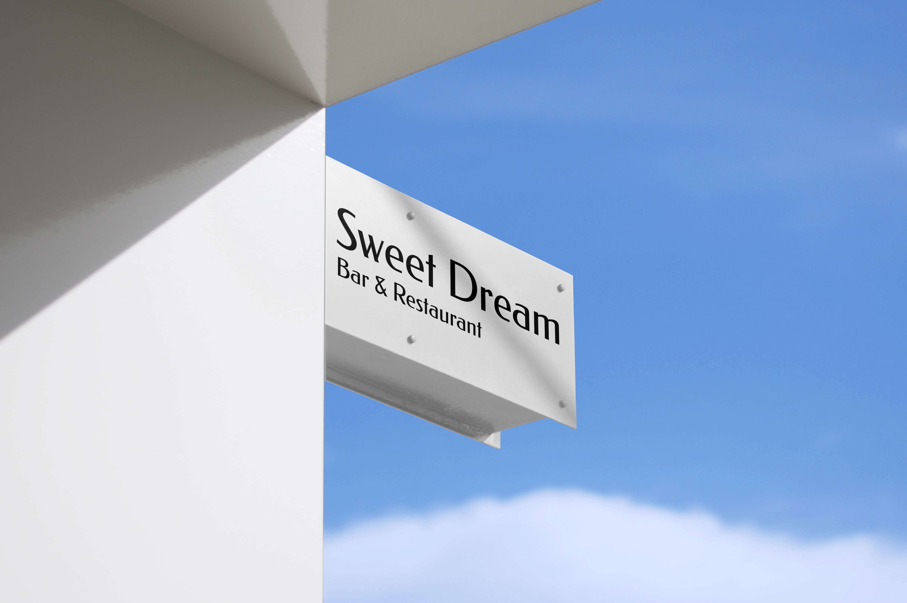
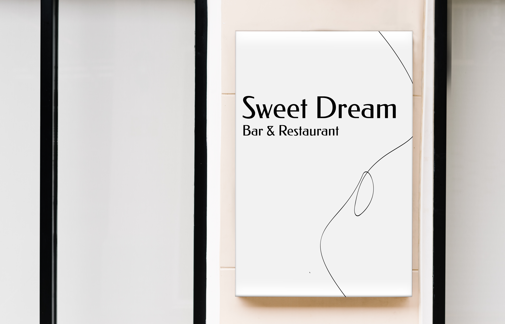

I created this brand, Sweet Dream. It is an Asian fruit wine brand.
Making fruit wine has such a long history in Asia, and it is a big and popular category of alcoholic drink there. Fruit wine can be made from any fruit, is usually sweet and low in alcohol.
However, that specific flavor is really hard to find in the US market, so we are here to bring that sweetness. Our drink comes in small bottles that are right enough to get you ready for a Sweet Dream.
Mission
The logline Get ready for a sweet dream tells the concept behind the brand.
The Mission of Sweet Dream is to provide a fresh and sweet touch to your alchole, and prepare you for a nice and sweet dream with just a perfect bottle of drink.
Each bottle is in a fairly small size, so a bottle gives just enough of sweetness and alcohol needed to prepare for a sweet dream.
Brand Story
Our founder Yiping moved to the US in her teenage. Since the day she started drinking, she had been trying to find something sweeter that is more of a juice drink with alcohol on the market, however, it is really hard.
During a trip back to China, she found that the Chinese market is really overly crowded by many fruit wine brands and they are exactly what she had been, but they are all in some kind of cute or very traditional looking design, which she doesn’t think is the only way to go for these brands.
So she created Sweet Dream, combined more brewing methods from other Asian countries, to find the best flavor for consumers that are from all over the world. The brand had minimalist design and didn’t include any traditional touch because it is not only one of the Asian countries, and it allows imagery space on the history of it.
Design Strategies
The brand holds a very minimal design, with brand colors of simply white and black.
Typefaces used are Federo Regular, Lexend Light and Thin.
The minimalist design also carries for the photography style and illustration style.
More details are listed in the complete brand book.
Products
Gift Packages are also available.
These are 3 flavors packages.
Mix and match of flavors are allowed for the gift packages.
Marketing Materials
Posters


Website


Physical Locations
We also have Bar & Restaurants that provide the unique drinking and dining experience of creative fusion Asian cuisine.
Store Front
 Menu